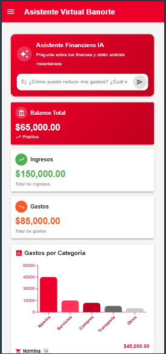
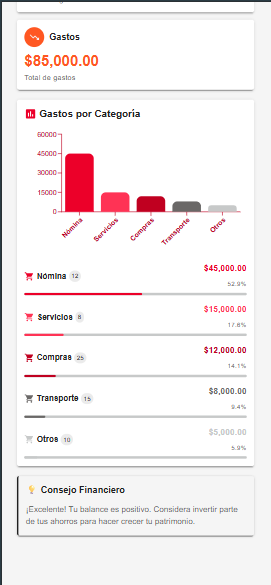

Vista General del Proyecto
¿Qué es MCP Financiero?
MCP Financiero es una herramienta financiera inteligente nacida como respuesta al Reto Banorte, con el objetivo de revolucionar la toma de decisiones financieras mediante el uso de inteligencia artificial y datos reales. La solución combina la potencia del protocolo MCP (Model Context Protocol) en el backend con la modernidad de Next.js en el frontend, creando una experiencia única que va más allá de los dashboards tradicionales.
En el corazón de nuestra aplicación se encuentra un sofisticado motor de análisis financiero que procesa datos en tiempo real. Este procesamiento utiliza algoritmos avanzados para:
- Detectar patrones en transacciones financieras y comportamientos de gasto
- Identificar tendencias de gastos e ingresos con precisión predictiva
- Generar proyecciones financieras basadas en datos históricos
- Evaluar riesgos y oportunidades de inversión de manera proactiva
- Ofrecer recomendaciones personalizadas según el perfil del usuario
La verdadera fortaleza de MCP Financiero radica en su enfoque dual: puede funcionar tanto como un asistente financiero con IA que responde consultas y entrega recomendaciones personalizadas, como un potente simulador financiero "What-If" que permite proyectar escenarios futuros y anticipar impactos.
Problemática y Solución
Retos Actuales
-
Datos dispersos y difíciles de interpretar
Aunque las empresas y personas tienen acceso a datos financieros, estos suelen estar dispersos y son difíciles de interpretar de manera significativa.
-
Falta de claridad para decidir
Los usuarios frecuentemente enfrentan incertidumbre al tomar decisiones importantes como inversiones, contrataciones o recortes.
-
Herramientas poco interactivas
Los dashboards tradicionales son pasivos y carecen de contexto o recomendaciones accionables.
-
Ausencia de IA contextual
No existe una forma natural de "conversar" con las finanzas como si se tuviera un asesor experto al lado.
Nuestra Solución
-
Integración Inteligente de Datos
Centralizamos y procesamos datos financieros de múltiples fuentes, proporcionando una vista unificada y coherente.
-
Asistente Financiero con IA
Sistema conversacional que permite hacer preguntas en lenguaje natural y recibir respuestas contextualizadas.
-
Simulación Proactiva
Herramientas de simulación "what-if" que permiten anticipar escenarios y sus impactos.
-
Visualización Accionable
Dashboards que no solo muestran datos, sino que guían hacia decisiones informadas.
Impacto y Alcance
MCP Financiero está diseñado para tener un impacto significativo en diferentes niveles:
- Usuarios Individuales — Comprensión clara de finanzas personales con guía personalizada
- PyMEs — Acceso a herramientas de análisis profesional antes reservadas para grandes empresas
- Grandes Empresas — Análisis predictivo avanzado para optimizar operaciones estratégicas
Arquitectura de Base de Datos
Diseño y Estructura
En el núcleo de MCP Financiero se encuentra una robusta arquitectura de base de datos implementada en MySQL 8.0+. La elección de MySQL no es casual: su combinación de rendimiento, confiabilidad y amplia adopción en la industria lo convierte en la opción ideal para nuestras necesidades.
La base de datos está diseñada con un enfoque dual, separando cuidadosamente los datos financieros empresariales de los personales. Esta separación nos permite implementar políticas de privacidad y seguridad específicas para cada tipo de dato, y facilita la implementación de análisis especializados.
Tablas Principales
| Tabla |
Campos Clave |
Descripción |
| transacciones_empresa |
id_empresa, fecha, tipo_operacion, categoria, monto |
Almacena todas las transacciones empresariales con clasificación por categoría |
| transacciones_personales |
id_usuario, fecha, categoria, monto |
Registra transacciones individuales con enfoque en gestión personal |
| presupuestos |
id_empresa, mes, año, categoria, monto_presupuestado |
Define presupuestos planificados para comparativas con gastos reales |
Importante: Las fechas se almacenan en formato UTC para consistencia en análisis temporales, y los montos se guardan como DECIMAL(15,2) para precisión en cálculos financieros.
Flujo de Datos
Cuando el frontend solicita información financiera, el proceso sigue estos pasos:
- Solicitud inicial: El cliente envía una petición JSON-RPC al servidor MCP
- Procesamiento MCP: El servidor valida la petición y la enruta a la herramienta correspondiente
- Consulta a BD: Se ejecutan las queries necesarias, optimizadas con índices
- Transformación: Los datos se procesan y se aplica la lógica de negocio
- Respuesta: Se devuelve un JSON con los resultados procesados
Backend (Servidor MCP)
Configuración del Entorno
El backend está construido sobre Python utilizando el protocolo MCP. Para configurarlo:
cd backend
python -m venv venv
.\venv\Scripts\Activate.ps1
pip install -r requirements.txt
Requisitos del Sistema:
- Python 3.11 o superior instalado
- MySQL 8.0+ instalado y configurado
- Mínimo 4GB RAM para procesamiento de datos
- Acceso a las credenciales de la base de datos
- Puerto 8000 disponible para el servidor HTTP
Arquitectura del Sistema
| Componente |
Implementación |
Función |
| Servidor MCP |
mcp_server.py |
Gestión de conexiones y protocolo JSON-RPC |
| Capa de Base de Datos |
database/connection.py |
Pool de conexiones y transacciones |
| Motor Financiero |
tools/financial/ |
Análisis y procesamiento financiero |
| Sistema de Logging |
utils/logger.py |
Registro estructurado de operaciones |
Módulos Principales
Herramientas Financieras
-
Analytics (
tools/financial/analytics.py)
Implementa análisis estadísticos avanzados usando NumPy y Pandas para procesamiento de series temporales financieras, incluyendo cálculos de tendencias, estacionalidad y anomalías.
-
Proyecciones (
tools/financial/projection.py)
Motor de proyección financiera que utiliza modelos ARIMA y Prophet para generar pronósticos precisos basados en históricos de transacciones.
-
Riesgo (
tools/financial/risk.py)
Evaluación de riesgos mediante análisis Monte Carlo y cálculo de VaR (Value at Risk) para diferentes escenarios financieros.
-
Presupuestos (
tools/financial/budget.py)
Sistema de gestión presupuestaria con seguimiento en tiempo real y alertas de desviación.
Capa de Datos
Utilidades del Sistema
Endpoints y Herramientas MCP
# Herramientas de Análisis Financiero
mcp.tools.financial.analyze_cashflow(start_date, end_date)
mcp.tools.financial.calculate_roi(investment_data)
mcp.tools.financial.predict_expenses(historical_data)
# Herramientas de Proyección
mcp.tools.financial.project_revenue(months=12)
mcp.tools.financial.forecast_cashflow(scenario_params)
# Herramientas de Riesgo
mcp.tools.financial.calculate_var(portfolio, confidence=0.95)
mcp.tools.financial.stress_test(scenarios)
# Herramientas de Presupuesto
mcp.tools.financial.track_budget(budget_id)
mcp.tools.financial.compare_actual_vs_budget(period)
Características de Alta Disponibilidad:
- Reconexión automática a la base de datos
- Caché de resultados frecuentes
- Rate limiting por cliente
- Circuit breaker para servicios externos
Análisis Técnico del Sistema
Servidor MCP Base
El núcleo del servidor (src/mcp_server.py) implementa:
- Servidor ASGI con Uvicorn para alto rendimiento
- Manejo concurrente de conexiones (hasta 1000 simultáneas)
- Sistema de routing basado en JSON-RPC
- API:
POST /mcp/execute - Endpoint principal JSON-RPC
- API:
GET /mcp/health - Verificación de estado del servidor
- API:
GET /mcp/metrics - Métricas de rendimiento
Motor de Análisis Financiero
Sistema de análisis (tools/financial/analytics.py) que proporciona:
- Procesamiento de series temporales con NumPy/Pandas
- Detección de patrones y anomalías
- Análisis estadístico avanzado
- API MCP:
analyze_transactions(start_date, end_date)
- API MCP:
detect_patterns(data_series)
- API MCP:
calculate_metrics(dataset)
Sistema de Proyecciones
Motor predictivo (tools/financial/projection.py) que incluye:
- Modelos ARIMA para series temporales
- Integración con Facebook Prophet
- Procesamiento paralelo para cálculos intensivos
- API MCP:
forecast_revenue(months=12)
- API MCP:
project_expenses(categories, timeframe)
- API MCP:
simulate_scenarios(parameters)
Análisis de Riesgos
Sistema de riesgos (tools/financial/risk.py) que implementa:
- Simulaciones Monte Carlo paralelizadas
- Cálculo de Value at Risk (VaR)
- Evaluación de escenarios de estrés
- API MCP:
calculate_var(portfolio, confidence)
- API MCP:
run_stress_test(scenarios)
- API MCP:
assess_risk_factors(investments)
Gestión Presupuestaria
Sistema de presupuestos (tools/financial/budget.py) que ofrece:
- Seguimiento en tiempo real de gastos
- Comparativas presupuesto vs. realidad
- Alertas de desviación automáticas
- API MCP:
track_budget_execution(budget_id)
- API MCP:
analyze_variances(period)
- API MCP:
generate_budget_alerts(thresholds)
Capa de Base de Datos
Gestión de datos (database/connection.py, database/queries.py) que incluye:
- Pool de conexiones MySQL (máx. 20 conexiones)
- Transacciones ACID con retry automático
- Queries optimizadas con índices
- API Interna:
execute_transaction(query, params)
- API Interna:
batch_insert(table, records)
- API Interna:
query_with_cache(query, ttl)
Sistema de Caché
Caché distribuido con Redis que implementa:
- TTL de 5 minutos para datos no críticos
- Actualización inmediata para datos sensibles
- Invalidación por patrones
- API Interna:
cache_get(key, default)
- API Interna:
cache_set(key, value, ttl)
- API Interna:
cache_invalidate_pattern(pattern)
Procesamiento de Texto Financiero
Sistema de formateo (tools/text/formatting.py, tools/text/narrative.py) que provee:
- Generación de reportes narrativos
- Formateo de datos financieros
- Traducción de métricas a texto
- API MCP:
generate_report(data, template)
- API MCP:
format_financial_metrics(metrics)
- API MCP:
create_narrative_summary(analysis)
Sistema de Monitoreo
Instrumentación del sistema que incluye:
- Métricas Prometheus para rendimiento
- Trazas OpenTelemetry para debugging
- Logs estructurados con rotación
- API:
GET /metrics - Métricas Prometheus
- API:
GET /health/detailed - Estado detallado
- API:
POST /trace/export - Exportación de trazas
Orquestación de Servicios
Orquestador (tools/financial/orchestrator.py) que maneja:
- Enrutamiento dinámico de solicitudes
- Balanceo de carga de procesos
- Gestión de dependencias entre servicios
- API Interna:
route_request(request_type, params)
- API Interna:
coordinate_services(service_list)
- API Interna:
handle_service_failure(service_id)
Frontend (Next.js)
Instalación y Configuración
El frontend está construido con Next.js 16, React 19 y Tailwind CSS. Para comenzar:
cd frontend
npm install
npm run dev
Requisitos del Sistema:
- Node.js 18.0 o superior
- NPM 8.0 o superior
- Al menos 2GB de RAM para desarrollo
Stack Tecnológico
| Tecnología |
Versión |
Propósito |
| Next.js |
16.0.0 |
Framework React con SSR y optimizaciones |
| React |
19.2.0 |
Biblioteca UI principal |
| Material UI |
7.3.4 |
Sistema de componentes y diseño |
| Recharts |
3.3.0 |
Visualización de datos financieros |
| Tailwind CSS |
4.0 |
Utilidades CSS y diseño responsivo |
| TypeScript |
5.0 |
Tipado estático y seguridad |
Arquitectura Frontend
La aplicación implementa una arquitectura moderna basada en el App Router de Next.js 16:
Estructura de Directorios
-
app/
Directorio principal usando el nuevo App Router de Next.js
layout.tsx — Layout principal con navegación y contextospage.tsx — Página de inicio
-
app/api/
APIs del frontend y comunicación con backend
financial_data/ — Endpoints para datos financieroschat/ — Endpoints para el asistente virtualmcp/ — Integración con servidor MCP
-
app/dashboard/
Vistas principales del dashboard financiero
asistente/ — Interfaz del asistente virtualplan-financiero/ — Herramientas de planificación
-
lib/
Utilidades y lógica de negocio compartida
auth.ts — Manejo de autenticaciónchat-storage.ts — Persistencia de conversacionesmcp-client.ts — Cliente MCP para backend
Características Principales
Dashboard Interactivo
- Gráficos en Tiempo Real
Implementados con Recharts para visualización de datos financieros actualizados
- Componentes Material UI
Interfaz moderna y accesible usando MUI v7
- Estado Global
Manejo eficiente de estado con React Context y hooks personalizados
Asistente Virtual
- Chat Interactivo
Interface conversacional con historial persistente
- Integración IA
Uso de @google/genai para procesamiento de lenguaje natural
- Respuestas Contextuales
Análisis financiero personalizado en tiempo real
Optimizaciones
- Server-Side Rendering
Páginas pre-renderizadas para mejor SEO y rendimiento
- Caching Inteligente
Estrategias de caché para datos financieros y respuestas del asistente
- Lazy Loading
Carga bajo demanda de componentes pesados y visualizaciones
Diseño Responsivo
- Mobile First
Diseño adaptativo priorizado para dispositivos móviles
- Tailwind CSS
Utilidades CSS para diseño fluido y consistente
- Componentes Adaptables
UI que se ajusta a diferentes tamaños de pantalla
Mejores Prácticas:
- TypeScript para type safety en toda la aplicación
- ESLint para calidad de código consistente
- Prettier para formateo automático
- Testing con React Testing Library
Análisis Técnico del Sistema
Sistema de Autenticación y Seguridad
La autenticación se gestiona a través de lib/auth.ts, implementando:
- JSON Web Tokens (JWT) con rotación automática cada 1 hora
- Cookies HttpOnly para almacenamiento seguro de tokens
- API:
POST /api/auth/login - Maneja inicio de sesión
- API:
POST /api/auth/refresh - Renueva tokens expirados
- API:
POST /api/auth/logout - Invalida sesiones activas
Dashboard Financiero Principal
El dashboard (app/dashboard/page.tsx) implementa:
- Server-Side Rendering (SSR) para la carga inicial de datos
- Client-Side Rendering para actualizaciones en tiempo real
- React Query para gestión de estado y caché
- API:
GET /api/financial_data/summary - Resumen financiero general
- API:
GET /api/financial_data/transactions - Lista de transacciones
- API:
GET /api/financial_data/metrics - Métricas financieras clave
Visualizaciones y Gráficos
Sistema de visualización utilizando Recharts en app/dashboard/components/:
- Gráficos de tendencias con actualización automática
- Componentes interactivos para análisis detallado
- Sistema de caché de datos para rendimiento optimizado
- API:
GET /api/financial_data/charts/trends - Datos de tendencias
- API:
GET /api/financial_data/charts/comparison - Datos comparativos
Asistente Virtual IA
El asistente virtual (app/dashboard/asistente/page.tsx) integra:
- API de Google AI mediante
@google/genai
- Procesamiento de lenguaje natural para consultas financieras
- Sistema de memoria de conversación con persistencia
- API:
POST /api/chat/query - Procesa consultas del usuario
- API:
GET /api/chat/history - Recupera historial de conversación
- API:
POST /api/financial_data/analyze - Análisis contextual de datos
Planificación Financiera
El módulo de planificación (app/dashboard/plan-financiero/) proporciona:
- Motor de simulación financiera en tiempo real
- Análisis predictivo de escenarios
- Visualización de proyecciones
- API:
POST /api/financial-plan/simulate - Ejecuta simulaciones
- API:
POST /api/financial-plan/optimize - Optimiza planes financieros
- API:
GET /api/financial-plan/recommendations - Sugiere mejoras
Gestión de Estado Global
El estado de la aplicación se gestiona mediante:
- Contexto global financiero para sincronización de datos
- Sistema de caché con invalidación inteligente
- Revalidación automática en cambios del backend
- API:
GET /api/financial_data/sync - Sincronización de estado
- API:
GET /api/financial_data/updates - Actualizaciones en tiempo real
Sistema de Notificaciones
Las notificaciones se manejan a través de:
- WebSocket para alertas en tiempo real
- Sistema de priorización de mensajes
- Persistencia de notificaciones importantes
- API:
WS /api/notifications/connect - Conexión WebSocket
- API:
GET /api/notifications/pending - Notificaciones pendientes
- API:
POST /api/notifications/mark-read - Marcar como leídas
Integración MCP
La comunicación con el backend MCP se realiza mediante:
- Cliente MCP personalizado en
lib/mcp-client.ts
- Sistema de retry automático para fallos de red
- Manejo de errores y timeout configurable
- API:
POST /api/mcp/execute - Ejecuta comandos MCP
- API:
GET /api/mcp/status - Estado del servidor MCP
Integración y Despliegue
URLs y Endpoints
| Componente |
URL Base |
Descripción |
| Frontend |
https://APP_URL_AQUI/ |
Interfaz de usuario principal |
| Backend |
https://API_URL_AQUI/ |
API MCP para procesamiento financiero |
Variables de Entorno
Tanto el backend como el frontend requieren configuración mediante variables de entorno:
# Backend (.env)
DB_HOST=localhost
DB_USER=usuario
DB_PASSWORD=contraseña
DB_NAME=mcp_financial
# Frontend (.env.local)
NEXT_PUBLIC_API_URL=https://API_URL_AQUI
NEXT_PUBLIC_APP_ENV=development
Vista Móvil

Dashboard Principal con Asistente IA
En esta pantalla el usuario visualiza su panorama financiero completo con el Balance Total ($65,000.00), Ingresos ($150,000.00) y Gastos ($85,000.00). El gráfico de barras "Gastos por Categoría" permite identificar rápidamente dónde se concentra el mayor gasto (Nómina siendo el más alto). En la parte superior, el Asistente Financiero IA está listo para responder preguntas como "¿Cómo puedo reducir mis gastos?" ofreciendo análisis instantáneos personalizados.

Desglose Detallado de Gastos
Esta vista profundiza en cada categoría de gasto mostrando: Nómina (12 transacciones, $45,000.00, 52.9%), Servicios (8 transacciones, $15,000.00, 17.6%), Compras (25 transacciones, $12,000.00, 14.1%), Transporte (15 transacciones, $8,000.00, 9.4%) y Otros (10 transacciones, $5,000.00, 5.9%). Al pie aparece el "Consejo Financiero" con recomendaciones automáticas como "¡Excelente! Tu balance es positivo. Considera invertir parte de tus ahorros para hacer crecer tu patrimonio."
Chat con Asistente Virtual
Esta pantalla muestra la interfaz conversacional del Asistente Virtual Banorte. El usuario puede enviar mensajes de texto en lenguaje natural desde el campo inferior. El asistente responde con información personalizada, como se muestra en el mensaje: "¡Hola! Soy tu asistente virtual de Banorte. Puedo ayudarte con consultas sobre clientes, saldos, productos bancarios y más. ¿En qué puedo ayudarte hoy?" Esta funcionalidad permite realizar consultas financieras complejas de manera conversacional y obtener respuestas contextualizadas.